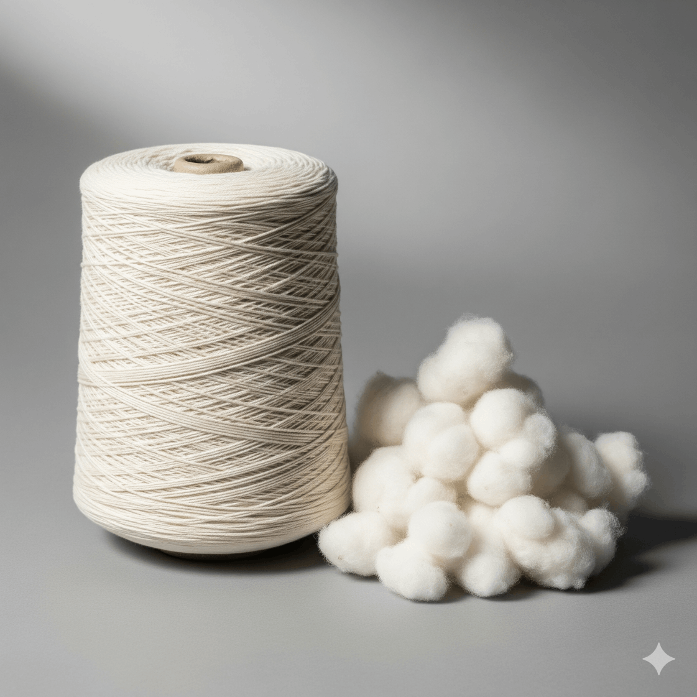
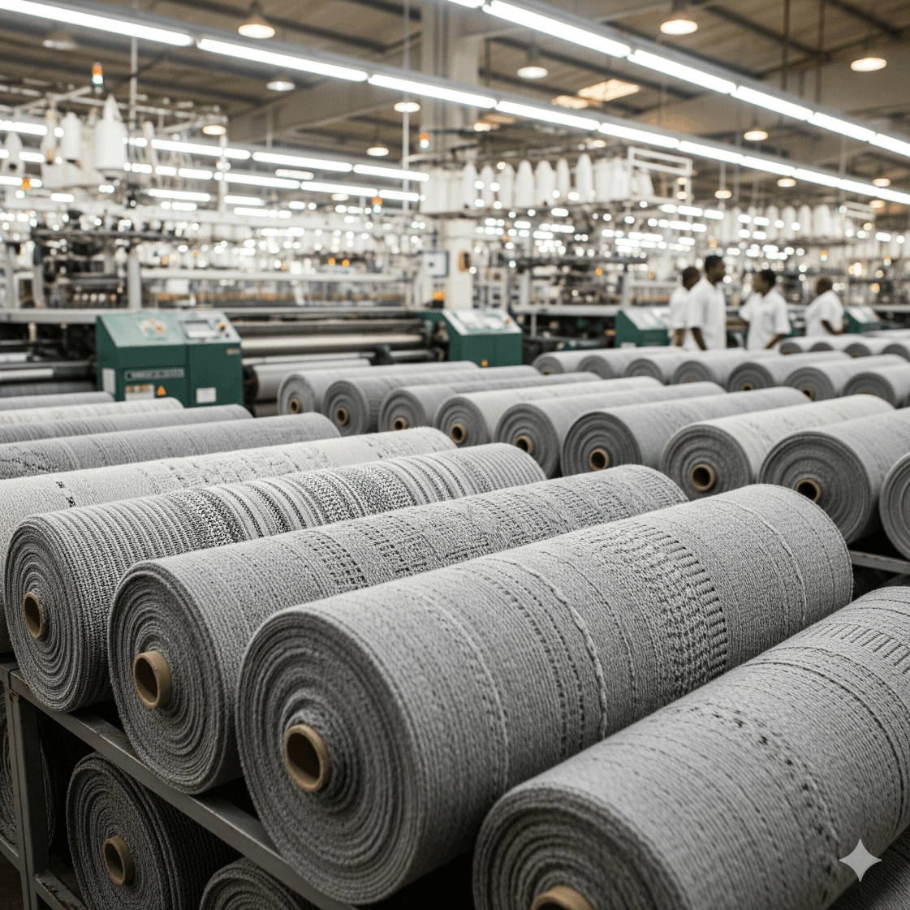
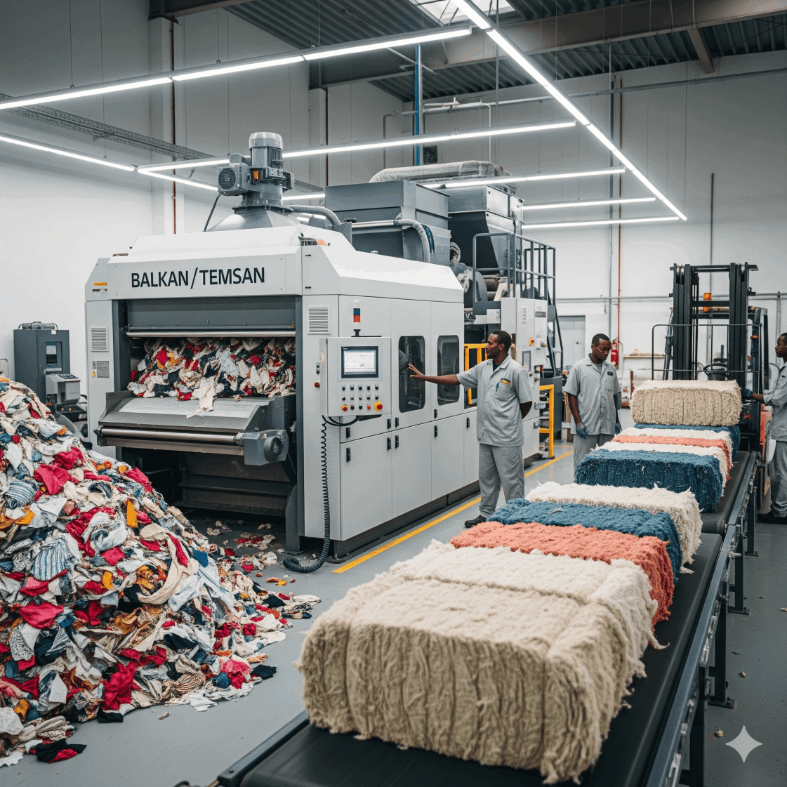
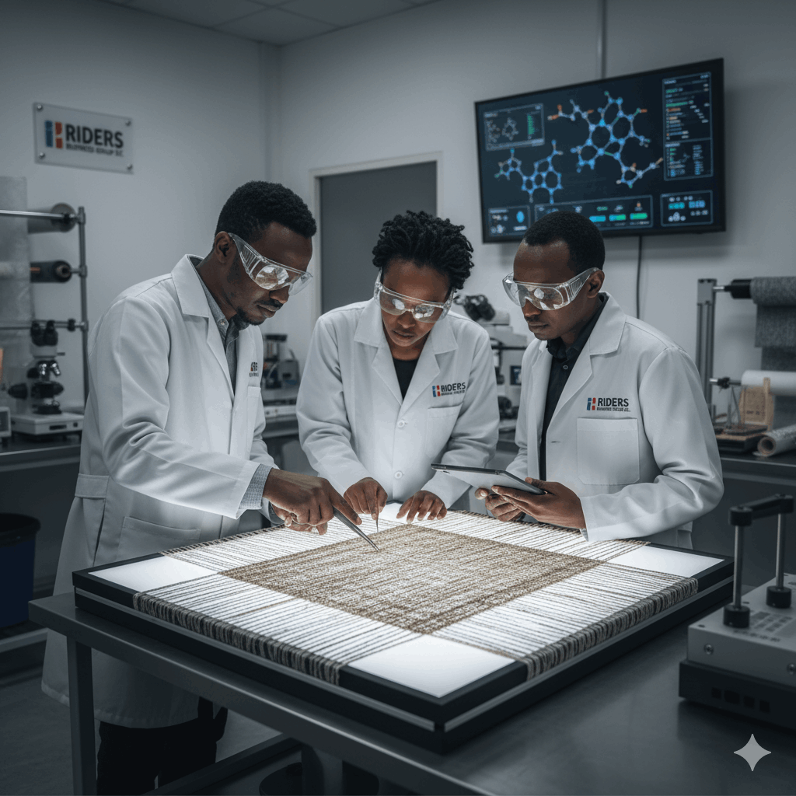
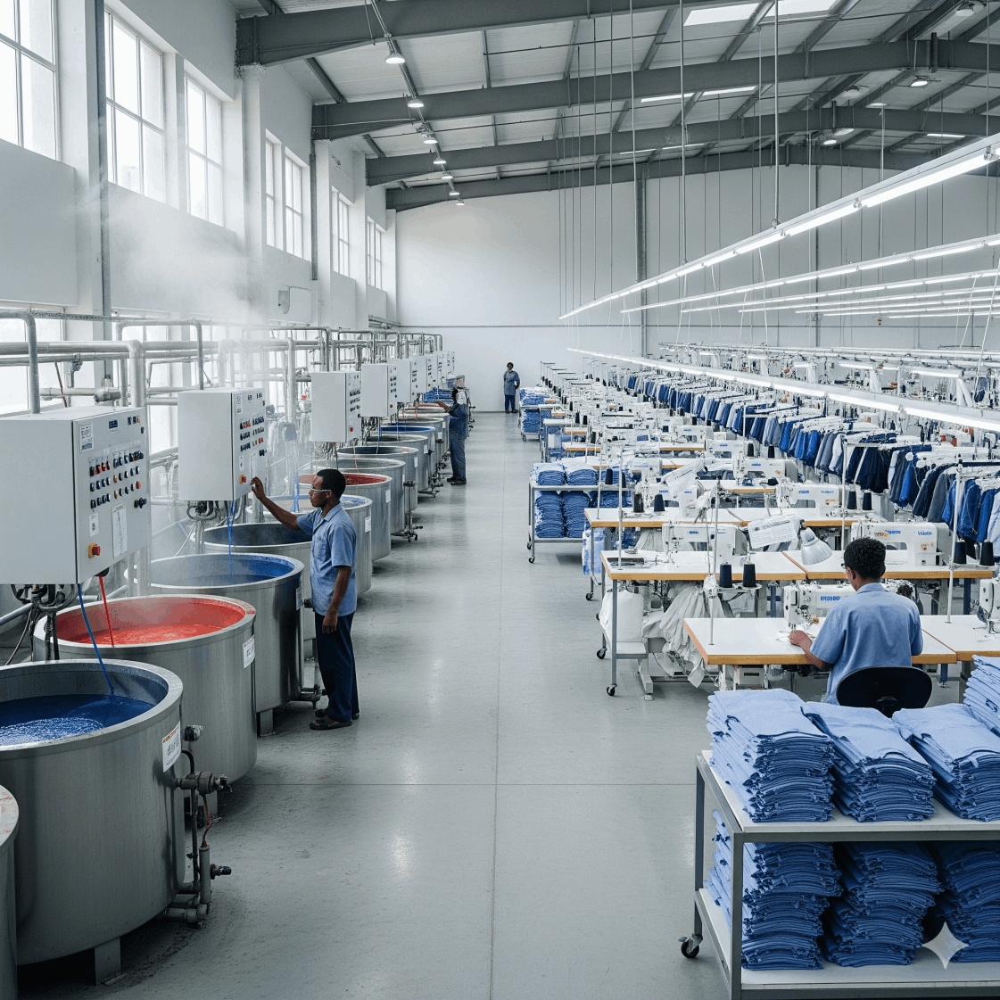

From Ethiopian cotton to world-class yarns & fabrics.

We produce 100% Ethiopian cotton yarn across a range of counts using both ring and open-end systems. Typical yarns produced: Open-end carded NE-10/1 → NE-22/1; Ring frame NE-21/1 → NE-40/1. Our ginnery supplies high-quality lint (20 t/day capacity) for internal use and external buyers.

Our weaving lines produce grey woven and knitted fabrics at scale (more than 35,000 meters/day capacity). These fabrics are supplied as grey goods today; finishing (bleaching, dyeing, mercerizing, printing) will be added through our planned wet-processing line — finished fabric options will be available once the finishing line is operational.

We operate an in-house cotton recycling unit that converts textile waste into reusable fiber bales — supporting sustainable, circular production. The recycling line includes Balkan/Temsan equipment and integrated controls to ensure consistent recycled output.

While our core output today is cotton yarn and grey fabrics, our spinning & weaving capabilities allow us to develop custom technical textiles on request (subject to sample development and feasibility). For specialized performance requirements we work with partners and clients to prototype and test solutions.

Riders is rolling out a wet-processing line (inspection, scouring, bleaching, dyeing, finishing) and a garmenting facility for full package production. Until those units are fully operational, we supply grey fabrics and yarn and partner with finishing/garmenting specialists for finished goods.
High-quality yarns produced from 100% Ethiopian cotton using both open-end and ring spinning systems.
Counts available: NE 10/1 – NE 40/1
Applications: Knitting, weaving, and further processing for apparel and industrial textiles.
Greige fabrics manufactured on advanced Sulzer looms, with daily capacity exceeding 35,000 meters. Supplied as unfinished fabric, ready for dyeing, printing, or finishing.
Applications: Shirting, casualwear, uniforms, upholstery, technical uses.
Produced in-house by our advanced Balkan/Temsan recycling unit, turning textile waste into reusable fiber.
Applications: Blended yarn production, filling material, sustainable textile projects.
Durable greige fabrics designed for further finishing into industrial applications such as tents, covers, or agricultural textiles.
Applications: Automotive, agricultural, protective uses (finishing required).
RIDERS-ELSE maintains rigorous quality control throughout our production process. Every product undergoes multiple inspections to ensure it meets our exacting standards before reaching our customers.